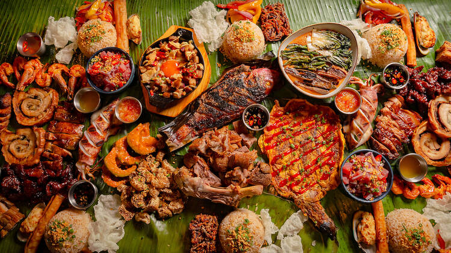
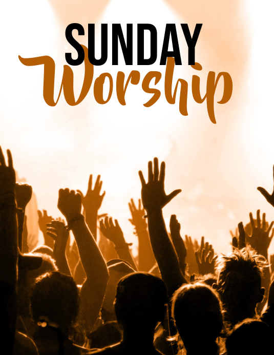

Color: Green, Blue, and Black
I like these colors because they glow, stand out, and look strong and cool at the same time.

Food: All Foods 😋
I don't have one favorite — I love all kinds of food! Hehe!
Song: Holy Forever
This song lifts my spirit and reminds me of God’s greatness and faithfulness.

Movie/Series: Incognito
I enjoy this series because of the action, excitement, and teamwork in the story.
Season: Rainy
The rain makes me feel peaceful and calm. It's my favorite weather to relax.

Day: Sunday
Sunday is special because it's my time for worship, rest, and spending time with God.

Subject: Philosophy
I enjoy philosophy because it makes me think deeply about life and how people think.